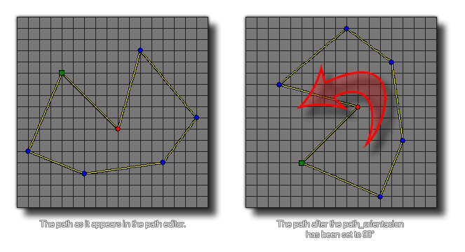

path_orientation;
Renvoie: Real.
Cette variable contient l'orientation actuelle du chemin. Lorsqu'un chemin est créé, son orientation est 0 degré par défaut, mais vous pouvez définir cette valeur sur tout ce que vous souhaitez utiliser. Souvenez-vous que dans GameMaker Studio 2 (sauf si vous utilisez la physique), les angles sont calculés dans le sens inverse des aiguilles d'une montre. Régler l'orientation du chemin sur 90 ° ferait alors pivoter le chemin vers la gauche.

mypath = path_duplicate(choose(path_1, path_2,
path_3, path_4));
path_orientation = 90;
Le code ci-dessus duplique une ressource de chemin prédéfinie aléatoire dans la variable "mypath". Ce nouveau chemin est ensuite tourné de 90 °.